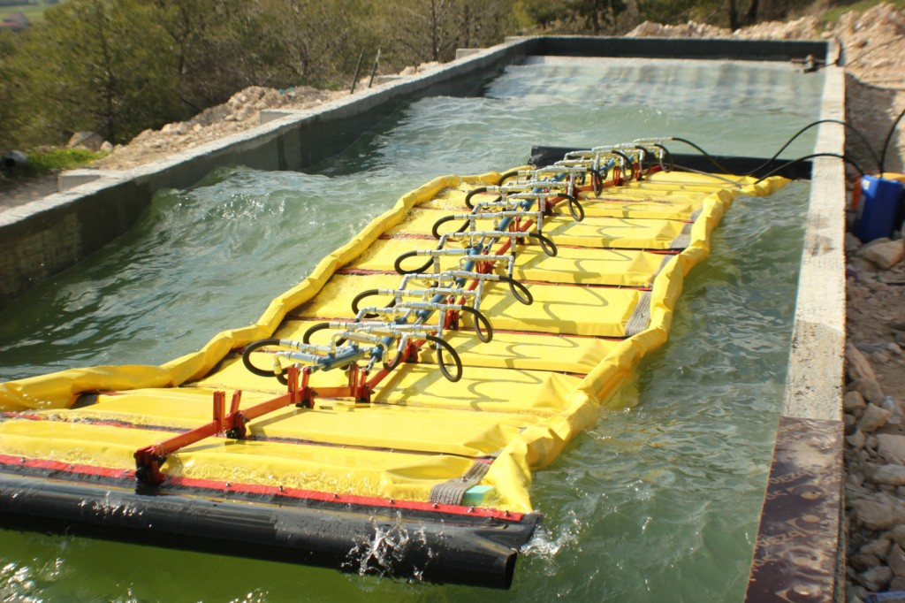
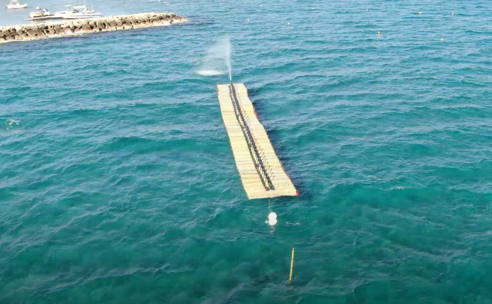

Features
Ultra Low Cost
The Waveline Magnet boasts an exceptionally low manufacturing cost, primarily attributed to its efficient use of lightweight materials like plastics and reinforced plastics. By employing materials and components readily available in the market, SWEL's technology eliminates the need for costly specialized production lines or extensive new infrastructure. This streamlined approach significantly reduces production expenses. Moreover, its modular and lightweight design not only minimizes production costs but also drastically cuts down on deployment and retrieval expenses.
Low Mass
Occupying only a few centimeters of covered surface area both above and below the waterline, the Waveline Magnet requires a minimal mass of materials per square meter of the device. This low mass not only enhances its efficiency but also makes it an unobtrusive and environmentally friendly solution for harnessing wave energy.
Low Maintenance
The Waveline Magnet's simplistic modular design offers the added advantage of easy repair, maintenance, production, and transportation. Its streamlined construction allows for rapid mass production and deployment, with turnaround times measured in weeks rather than months. This quick and cost-effective implementation ensures minimal downtime and maximum efficiency.
Robust
The device's robustness is inherent in its unique interaction with the dynamic forces of the sea. By harmonizing with the wave's movement instead of resisting it, the Waveline Magnet eliminates survivability issues and keeps maintenance and repair costs to a minimum. Its ability to adapt to varying wave profiles and weather conditions ensures consistent performance and longevity.
High Output
Designed to embrace the surface of the sea, or the 'wave line,' the wave energy converter becomes one moving mass with the wave itself, creating a unique interaction that allows NWEL to regulate energy extraction in a controlled and non-disruptive manner. This seamless and frictionless interaction enables the device to work in harmony with the deployed sea area, producing high levels of power regardless of the wave profile or weather conditions.
Recycled Materials
Committed to sustainability, the Waveline Magnet is predominantly made from recycled materials. This eco-friendly approach not only reduces the device's environmental impact but also addresses the growing problem of material waste. By utilizing recycled materials, SWEL contributes to a more sustainable future while providing efficient and reliable wave energy solutions.
